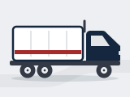
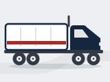
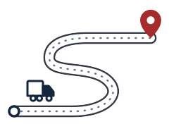
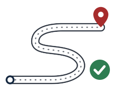
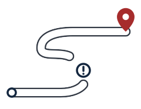

OptiRuta · Sistema de diseño v2 (propuesta para aprobación)
Galería viva: cada tarjeta usa los mismos tokens y clases que las tres pantallas de muestra. Cuando se apruebe, estos tokens pasan a lib/core/theme/ y estos componentes a lib/core/widgets/.
1 · Tokens
Color — paleta cerrada de la marca + tintes derivados
Contraste de las parejas que se usan (WCAG 2.1 AA)
Tipografía — Inter, cifras tabulares
$ 3,71 M hero · 36/42 · 700 · solo el número de rentabilidad
28/34 · display · 700 cifras clave, saludo
20/26 · título · 600
16/22 · subtítulo · 600
14/20 · cuerpo · 400 — Contenido, valores de formulario y celdas de tabla.
12/16 · etiqueta · 500 — Labels de campo, encabezados de tabla, texto de badge.
elev.card (tarjeta) · elev.float (hoja inferior, aviso, tarjeta de rentabilidad). Solo dos niveles.
Movimiento — duraciones, curvas y disparadores
Token
Valor
Uso
motion.fast
120 ms
Respuesta táctil (botón presionado), salida de un valor que se reemplaza
motion.base
200 ms
Fundidos, check que se dibuja, cambio de color del semáforo, entrada de un valor
motion.slow
300 ms
Hoja inferior, tramo del hilo que se rellena, entrada de tarjetas
motion.count
600 ms
Solo el conteo del número de rentabilidad, una vez por carga
ease.out
cubic-bezier(.2,.8,.2,1)
Casi todo (desaceleración suave)
ease.inOut
cubic-bezier(.4,0,.2,1)
Rellenos y cambios de color
stagger
40 ms · máx. 5 elementos
Entrada de listas
Reducir movimiento
todo → 0 ms
El estado final aparece de inmediato; nada depende de la animación para informar
2 · Iconos
Una sola familia: cuadrícula 24, trazo 1,75, terminales redondeados. Contorno por defecto, relleno en el destino activo de navegación. Rasgo de marca: el nodo (anillo, punto o el pin con hueco del logo) en la familia de ruta. El rojo de marca solo en navegación activa; los iconos de estado nunca lo usan. El semáforo usa formas distintas, no solo color.
3 · Componentes y estados
Botones — un solo primario por pantalla; el primario nunca es rojo
normal
presionado (overlay 20 %)
foco (anillo rojo de marca)
deshabilitado (38 %)
cargando
outline
terciario
rojo de marca; pide confirmación
Campos — el valor automático (estimado) no se parece al ingresado
$Est.
Estimado por el sistema. Cámbialo por lo que pagaste.
$Real
Este valor quedó como real.
$
Escribe el valor que pagaste para guardarlo.
Chips de selección
Estado del viaje — ciclo de vida (neutros; no usan colores de semáforo)
PlanificadoAsignadoEn cursoFinalizadoCerradoRetraso 1 h 20
Semáforo de rentabilidad — icono (forma distinta) + etiqueta; cuarto estado gris
El estado lo calcula el servidor con umbrales configurables (por definir). La app solo dibuja ok · warn · bad · none. Las etiquetas “Rentable / Margen bajo / Pérdida” también están por confirmar.
Base de cálculo — qué tan firme es el número
ProyectadaParcialConfirmadaAjustada
Estimado · Real · Ajustado — se distinguen sin color (símbolo + peso + etiqueta)
Real · check, texto pleno en seminegrita, chip “Real”. La fuente va como texto (“GoPass”, “Conductor”).
3.300 Ajustado
Ajustado · tras el cierre; icono de historial, abre el ajuste con su motivo.
Alertas
InformaciónLo que ya registraste sigue guardado.
AtenciónEl SOAT de SXK 418 vence en 12 días.
Hay que actuarNo se pudo guardar. Reintenta.
Indicador de sincronización — lo registrado sin señal nunca parece perdido
SincronizadoSincronizando…2 por enviarSin señal · 1 en tu equipo
Tarjeta con franja de atención · miniatura de vehículo · figura de ruta
Barranquilla → Medellín
Franja ámbar = viaje con retraso (RF-20). La rentabilidad va en su propio semáforo.
Medellín → Cartagena
Franja neutra = sin alerta.


Sin foto
Imagen de reemplazo de marca (doble troque · mula) hasta que exista la foto real; mismo recorte 4:3, esquinas 12. Si no hay ninguna: marcador “Sin foto”, nunca un hueco.
Figura de ruta: trazo estático y estimado (origen ◦ → destino ⌖). No es seguimiento: sin camión sobre la línea.
Línea de progreso de hitos — el “hilo de ruta”
Ilustraciones de marca — lenguaje del logo: ruta en S, anillo de origen, pin rojo. Máx. una por pantalla.

Vacío (sin viaje asignado, sin viajes en curso)

Éxito (viaje cerrado)

Error / sin conexión (admin)
Carga — esqueleto con la estructura real
Hoja inferior · aviso temporal
Salida con cargaViaje #0142 · Medellín → Cartagena
Salida con carga guardada a las 09:04
Navegación inferior — icono + texto; activo con rojo de marca e icono relleno
Conductor · 3 destinos
Administrador · 5 destinos
4 · Catálogo de movimiento (pulsa para ver)
Registrar un hito
Check que se dibuja (200 ms) → el tramo del hilo se rellena (300 ms) → el siguiente se activa. El guardado local ocurre al instante.
Estimado → real
ACPM
El valor “≈” sale (120 ms) y el real entra (200 ms) con el check que se dibuja.
Rentabilidad
$ 0 M
Rentable
Conteo ≤ 600 ms, una sola vez; el semáforo cambia de color con fundido de 200 ms.
Otros movimientos
Hoja inferior: sube 300 ms con fondo atenuado · Listas: entrada escalonada (40 ms, máx. 5) · Carga: brillo suave del esqueleto · Alerta nueva: un solo pulso de 700 ms · Indicador de navegación: crece 200 ms · Sin señal → con señal: el hito pasa de “en tu equipo” a “sincronizado” con fundido.